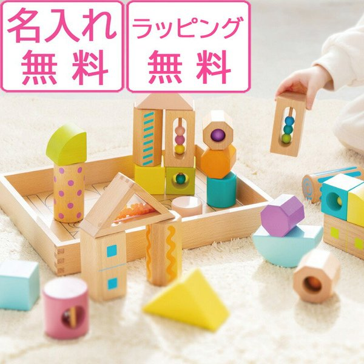
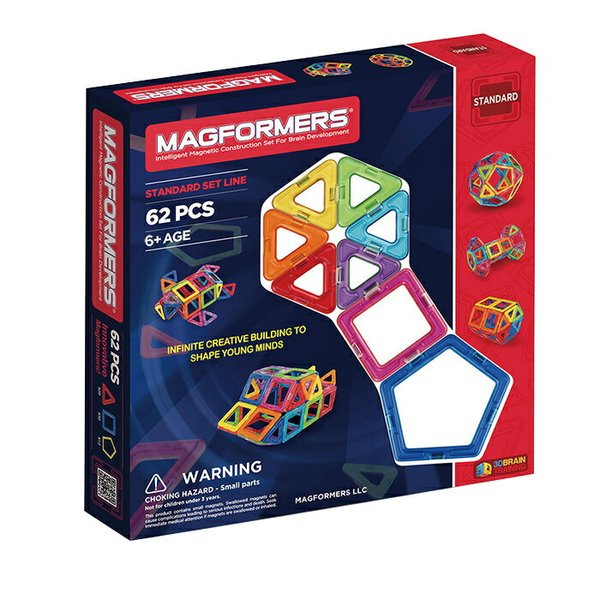
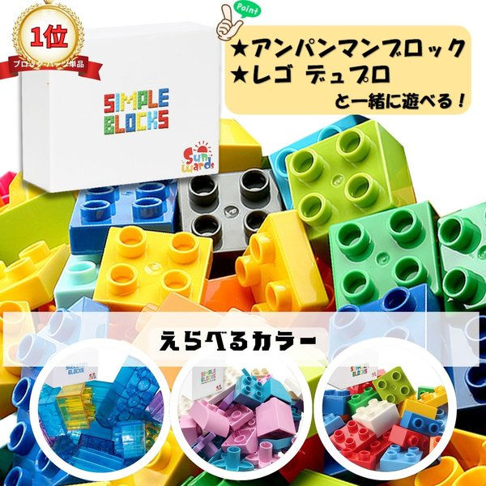
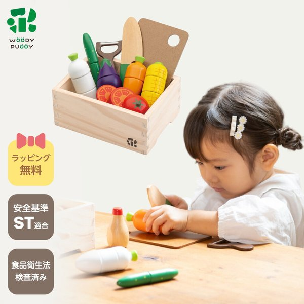
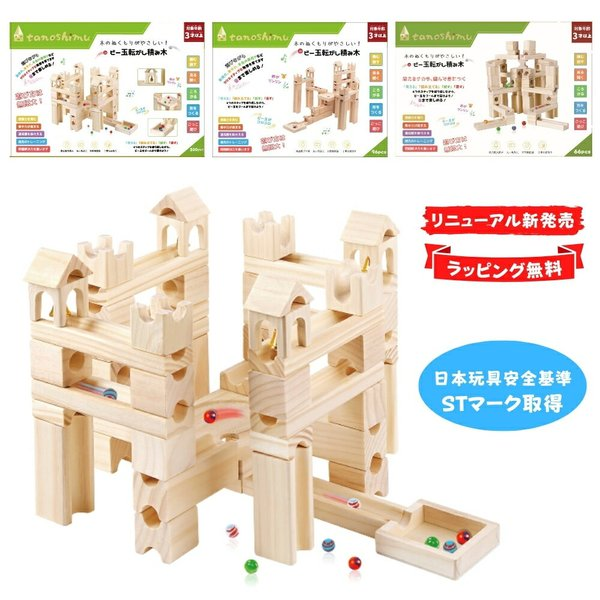
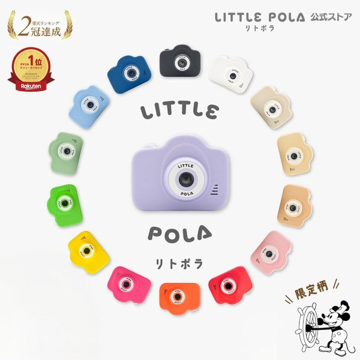
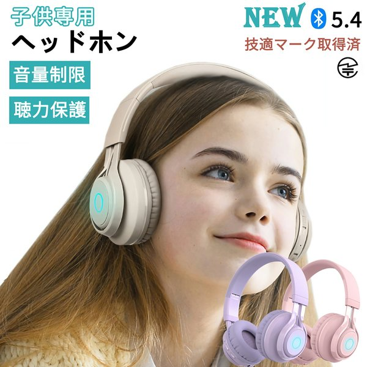
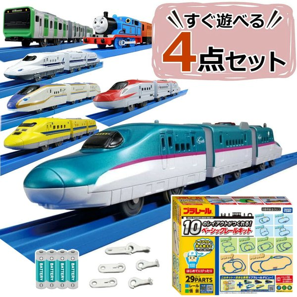
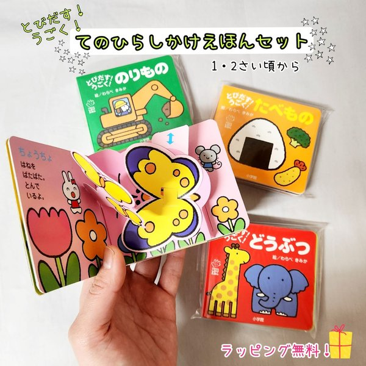
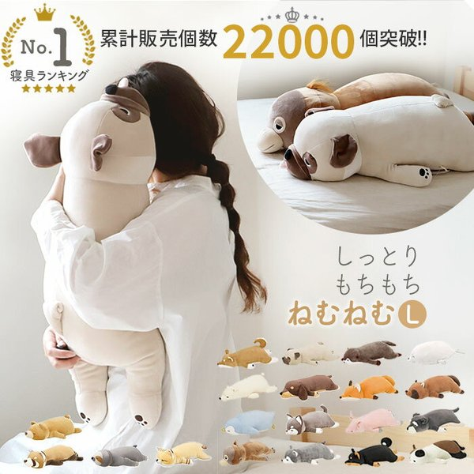

【2026年最新】クリスマスプレゼントに迷ったらこれ！知育玩具＆ファミリー便利アイテムおすすめ10選
クリスマスプレゼントは、その場で喜ばれることより、半年後も遊んでいるかどうかが大事です。光って音が出るだけのおもちゃはすぐ飽きられますが、自分で組み立てたり、ごっこ遊びができるものは長く使えます。
選ぶときは、対象年齢とパーツの大きさ、そして「一人で遊べるか、家族と遊べるか」を意識すると外しません。祖父母からの贈り物なら、木製のおもちゃは写真映えもして喜ばれます。
本記事では、楽天市場で人気・高評価の知育玩具＆キッズ向けアイテム10選を、実売価格とレビュー評価つきで写真付き紹介します。
- おすすめ10選 スペック・特徴比較表
- BEST 1｜音いっぱいつみき 25ピース 木箱付き
- BEST 2｜マグネットブロック 62ピース スタンダードセット
- BEST 3｜基本ブロック 大量セット（デュプロ・アンパンマンブロック対応）
- BEST 4｜はじめてのおままごと サラダセット 木箱入り
- BEST 5｜木製 ビー玉転がし スロープトイ
- BEST 6｜キッズカメラ トイカメラ 32GBカード付き
- BEST 7｜子供用ワイヤレスヘッドホン 85dB音量制限
- BEST 8｜プラレール 車両＆ベーシックレールキット
- BEST 9｜とびだす！うごく！てのひら しかけえほん 4冊セット
- BEST 10｜抱き枕 ぬいぐるみ 大きい 動物
- 【読者負担0円】買わなくても得する無料サービス
- まとめ：知育玩具10選の選び方
| 順位 | 商品名 | ブランド | 最大の特徴・おすすめ理由 | 総合評価 |
|---|---|---|---|---|
| BEST 1 | 音いっぱいつみき 25ピース 木箱付き | エドインター（GENI） | 全ピースから音が鳴る | 4.84 |
| BEST 2 | マグネットブロック 62ピース スタンダードセット | マグフォーマー（MAGFORMERS） | 62ピースで作品の幅が広い | 4.64 |
| BEST 3 | 基本ブロック 大量セット（デュプロ・アンパンマンブロック対応） | ブロック（デュプロ互換） | 手持ちのブロックに足せる | 4.65 |
| BEST 4 | はじめてのおままごと サラダセット 木箱入り | ウッディプッディ（WOODYPUDDY） | マグネットで切る感触が楽しい | 4.68 |
| BEST 5 | 木製 ビー玉転がし スロープトイ | tanoshimu | 試行錯誤で集中力が育つ | 4.55 |
| BEST 6 | キッズカメラ トイカメラ 32GBカード付き | リトポラ | 32GBカード付きですぐ使える | 4.49 |
| BEST 7 | 子供用ワイヤレスヘッドホン 85dB音量制限 | キッズヘッドホン | 85dBの音量制限付き | 4.62 |
| BEST 8 | プラレール 車両＆ベーシックレールキット | タカラトミー | 人気車両が複数入る | 4.87 |
| BEST 9 | とびだす！うごく！てのひら しかけえほん 4冊セット | 小学館 | 4冊セットで飽きにくい | 5.00 |
| BEST 10 | 抱き枕 ぬいぐるみ 大きい 動物 | ぬいぐるみ（抱き枕） | 抱き枕になる大きさ | 4.70 |
音いっぱいつみき 25ピース 木箱付き

25ピースすべてに音が入った木製積み木。振ると音が鳴るので、乳幼児でも遊びながら音の違いを楽しめます。木箱付きで片付けも簡単、出産祝いや1歳の誕生日に選ばれています。 楽天市場での実売価格は約11,000円（2026年11月時点）。
- 全ピースから音が鳴る
- 木箱付きで片付けやすい
- 1歳から長く遊べる
- 木製なので角の扱いに注意
マグネットブロック 62ピース スタンダードセット

磁石でくっつく三角形と四角形のブロック62ピース。平面から立体まで自由に組み立てられ、図形や立体の感覚が自然に身につきます。3歳前後から小学生まで長く遊べる知育玩具の定番です。 楽天市場での実売価格は約9,980円（2026年11月時点）。
- 62ピースで作品の幅が広い
- 立体図形の感覚が育つ
- 長く遊べる定番
- 小さなパーツの紛失に注意
基本ブロック 大量セット（デュプロ・アンパンマンブロック対応）

手持ちのデュプロやアンパンマンブロックと一緒に遊べる基本ブロックの大量セット。1,899円と手頃で、数を増やしたいときに足せます。既存のブロックが余りがちな家庭ほど活躍します。 楽天市場での実売価格は約1,899円（2026年11月時点）。
- 手持ちのブロックに足せる
- 1,800円台の手頃さ
- 大量に入っていて取り合いにならない
- 単体では説明書付きのセットではない
はじめてのおままごと サラダセット 木箱入り

マグネットで切れる木製の野菜と、サラダを作る道具がセットになったおままごと。木箱に入っていて、遊んだあとはそのまま片付きます。3歳前後の「やりたい」を引き出す定番ギフトです。 楽天市場での実売価格は約6,600円（2026年11月時点）。
- マグネットで切る感触が楽しい
- 木箱入りで贈り物に映える
- 3歳から遊べる
- パーツが多く紛失しやすい
木製 ビー玉転がし スロープトイ

木製のレールにビー玉を転がして遊ぶスロープトイ。どう組み合わせれば最後まで転がるかを試行錯誤するうちに、指先と考える力が育ちます。3歳から小学生まで、夢中になる年齢が長いのが魅力です。 楽天市場での実売価格は約5,500円（2026年11月時点）。
- 試行錯誤で集中力が育つ
- 無塗装の木の質感
- 3歳〜小学生まで長く遊べる
- 組み立て直す手間はかかる
キッズカメラ トイカメラ 32GBカード付き

子ども用のデジタルカメラ。32GBのカードが付属し、写真も動画も撮れます。ゲームなしモードに設定できるので、遊びに集中させたい家庭にも。クリスマスプレゼントに人気の定番です。 楽天市場での実売価格は約4,980円（2026年11月時点）。
- 32GBカード付きですぐ使える
- ゲームなしモードに切替可能
- 1年保証付き
- 画質はスマホに及ばない
子供用ワイヤレスヘッドホン 85dB音量制限

音量を85dBまでに制限できる子ども用ヘッドホン。Bluetoothと有線の両方に対応し、長時間の動画視聴でも耳への負担を抑えられます。タブレット学習や車移動のおともにも。 楽天市場での実売価格は約3,270円（2026年11月時点）。
- 85dBの音量制限付き
- 無線・有線の両対応
- 折りたたみ式で持ち運べる
- 連続再生時間は機種により短め
プラレール 車両＆ベーシックレールキット

はやぶさ・こまち・N700Aなど人気車両と基本レールが入ったプラレールのセット。10種類のレイアウトが組めるので、届いた日から遊べます。電車好きの子どもへの定番プレゼントです。 楽天市場での実売価格は約6,920円（2026年11月時点）。
- 人気車両が複数入る
- 10レイアウトを組める
- 追加レールで拡張できる
- レールの収納場所が必要
とびだす！うごく！てのひら しかけえほん 4冊セット

どうぶつ・むし・のりもの・たべものをテーマにした、手のひらサイズのしかけ絵本4冊セット。めくると絵が飛び出す仕掛けで、1〜3歳の子どもが繰り返し開きたくなります。 楽天市場での実売価格は約5,500円（2026年11月時点）。
- 4冊セットで飽きにくい
- 手のひらサイズで持ちやすい
- 1〜3歳向けの丈夫な作り
- 仕掛け部分は乱暴に扱うと破れる
抱き枕 ぬいぐるみ 大きい 動物

抱き枕になる大きさの動物ぬいぐるみ。寝るときの安心感があり、子ども部屋のインテリアにもなります。ラッピング対応なので、クリスマスや誕生日のプレゼントにもそのまま使えます。 楽天市場での実売価格は約4,362円（2026年11月時点）。
- 抱き枕になる大きさ
- ラッピング対応
- 子どもが喜ぶ動物デザイン
- 洗濯は手洗いが必要
この記事の商品を買う前に、まずは無料で得する選択肢をチェック。どれも登録・利用は0円で、無料期間中に解約すれば料金はかかりません。読みたい雑誌がある人、ポイントを貯めたい人、アンケートなら気軽という人、それぞれに合うものを選べます。
初回31日無料・無料期間中に解約すれば0円 → 楽天ポイントモール｜登録無料で毎日ポイ活
買い物なしでもポイントが貯まる無料サービス → 楽天インサイト｜アンケートに答えてポイント
登録無料・すきま時間のアンケートで貯まる → 楽天カード｜年会費永年無料
新規発行・年会費ずっと0円 →
4つのサービスの違いと使い分けは「出費0円で得する！買わずにポイントが貯まる無料サービス厳選4選」でまとめています。
💡 まとめ：知育玩具10選の選び方
子ども向けのプレゼントは、遊びながら何かが身につくものが結局いちばん長持ちします。積み木やブロックは年齢が上がっても遊び方が変わるので、最初の一つとしておすすめです。
楽天市場では「5と0のつく日」や「お買い物マラソン」などのキャンペーンに合わせて購入すると、ポイント還元が最大化してお得に手に入ります。ぜひチェックしてみてくださいね。